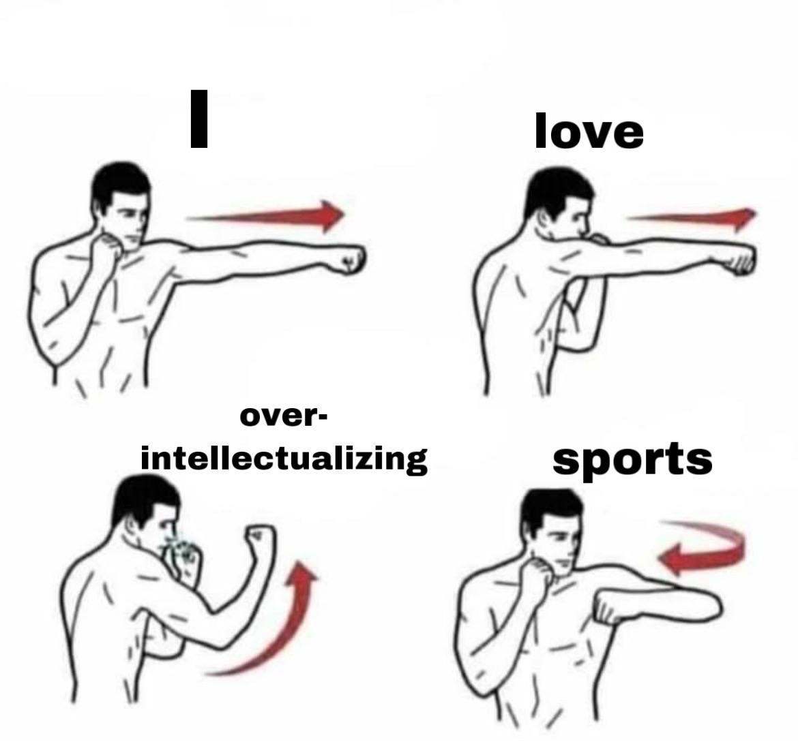

Francisco Logan
About me
I am a graduate student at the University of Northern Colorado studying Sport Administration in the School of Sport and Exercise Science. Currently, I'm a member of the Mellon Mays Graduate Initiatives Program, and was a Mellon Mays Fellow as an undergrad. I got my undergraduate degrees at the University of New Mexico.
Some of my biggest interests are sports and labor, academic and athletic equity, and learning what it is to be a graduate student rooted in the community. I am very interested in sport media and sport operations, and am always looking for shadowing opportunities!
In my free time I enjoy watching sports (Go Cubs; go Red Wings), playing sports, and coding. My biggest fear is driving in Denver and my greatest dream is to be able to pass on my best experiences in sports to everyone I can.
